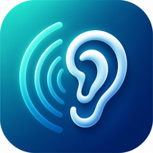

Auris
Sound care for tinnitus support
Desync sound · HD mixer · Breathing routine
iPhone Safari test mode
Some native Android features such as phone vibration or native MP3 L/R control may be limited on web.
iPhone에서 테스트 후 공유 버튼 → “홈 화면에 추가”로 웹앱처럼 실행할 수 있습니다.
Loading Auris...